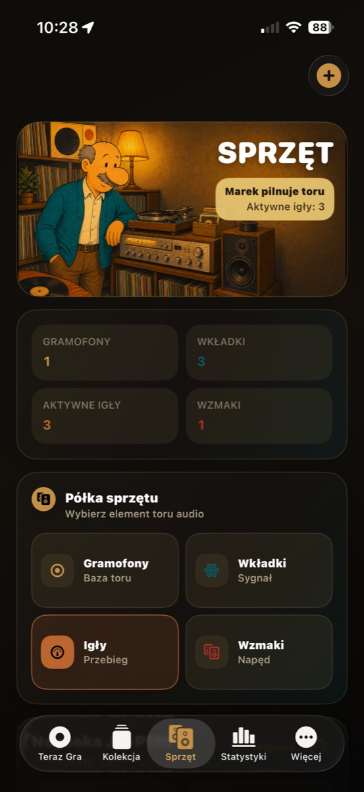
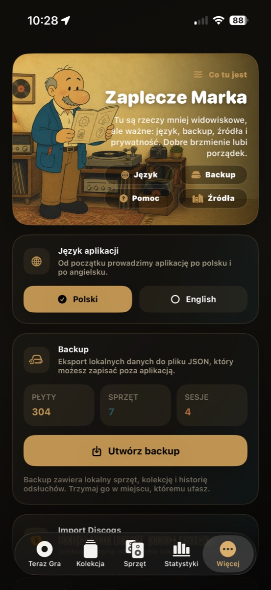
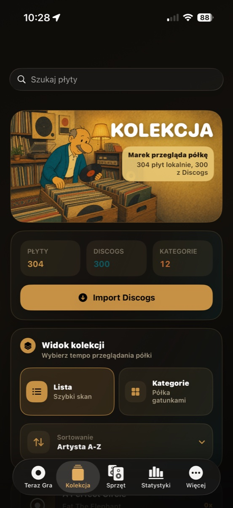
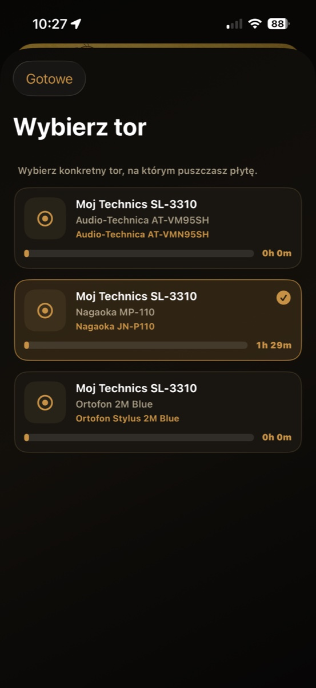
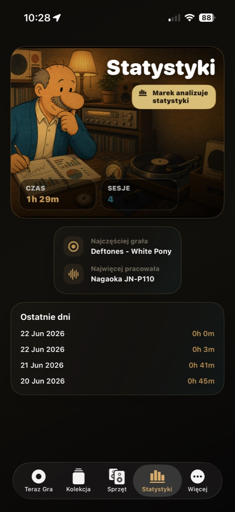

01
Teraz Gra
Wybierz płytę, odpal timer albo użyj opcjonalnego rozpoznawania winyla, gdy muzyka gra obok.
Wersja 1.5.1 na iPhone
Analogowy dziennik odsłuchu dla tych, którzy chcą wiedzieć jaka płyta gra, czysto importować winyle z Discogs, dbać o cały tor audio i uczciwie liczyć godziny igły.

Wybierz płytę, odpal timer albo użyj opcjonalnego rozpoznawania winyla, gdy muzyka gra obok.
Lokalna półka płyt z czystszym importem winyli z Discogs i bezpiecznym sprzątaniem.

Gramofony, wkładki, igły, wzmacniacze i kolumny tworzą jeden paszport toru audio.

Narzędzia opieki, czyszczenia i serwisowy kontekst są obok historii odsłuchu.
Co nowego w 1.5.1
Ta aktualizacja domyka fundament wersji 1.5: Discogs skupia się na winylach, usuwanie płyt sprząta powiązania, a aplikacja lepiej zachowuje się po pierwszej konfiguracji.
Pozycje niewinylowe są pomijane i policzone, więc lokalna kolekcja zostaje płytowa.
Tracklisty Discogs pobierają się tylko dla zaimportowanych wydań winylowych.
Usunięcie płyty sprząta też odsłuchy, czyszczenia i historię rozpoznań.
Dane demo dodają się tylko raz, a lokalizacje PL/EN dostały drobne poprawki.
Co robi aplikacja
Igła i Rowek jest local-first: bez konta, bez presji, bez społecznościowego hałasu. To narzędzie do codziennego rytuału puszczania płyt, rozpoznawania tego co gra i dbania o analogowy zestaw.
Wybierasz płytę, aktywną igłę i tor odsłuchu. Timer pilnuje sesji, a zapis trafia do historii.

Gramofony, wkładki i konkretne igły są osobnymi bytami, bo igła zużywa się szybciej niż reszta toru.

Statystyki pokazują czas słuchania, liczbę sesji, najczęściej grane płyty i najbardziej używane igły.

Wersja 1.5.1
To nie jest tracker dla samego trackingu. Aplikacja pomaga pamiętać, co grało, ile trwało, która igła zbiera godziny i jak cały zestaw pracuje w czasie.
Wersja 1.5.1 poprawia codzienne krawędzie: import Discogs omija niewinylowy bałagan, usuwanie płyty sprząta lokalne powiązania, a dane demo nie wracają po pierwszej konfiguracji.
Ekrany
Od startu sesji przez kolekcję i sprzęt po statystyki. Przewiń ekrany poziomo.
Wybór płyty, igły i timer sesji.

Krótki rytuał wejścia do aplikacji.
Historia odsłuchów i czas pracy igły.
Lokalna biblioteka płyt.
Tor audio, wkładki i igły.
Wnioski z realnego słuchania.

Backup, język i zaplecze.
Lokalny opiekun analogowy.
Privacy i support
Landing jest połączony z istniejącymi stronami privacy i support, więc linki używane w App Store Connect zostają bezpieczne.
Dane kolekcji, sesji i sprzętu są projektowane tak, żeby zostały na urządzeniu.
Czytaj privacy policyKontakt, zgłoszenia błędów i pytania App Store są na osobnej stronie wsparcia.
Otwórz support